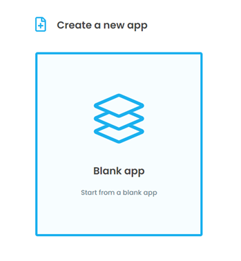
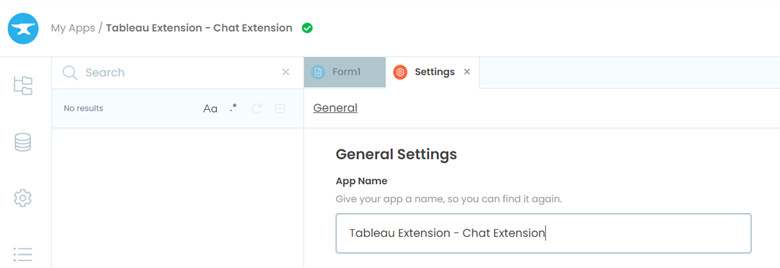
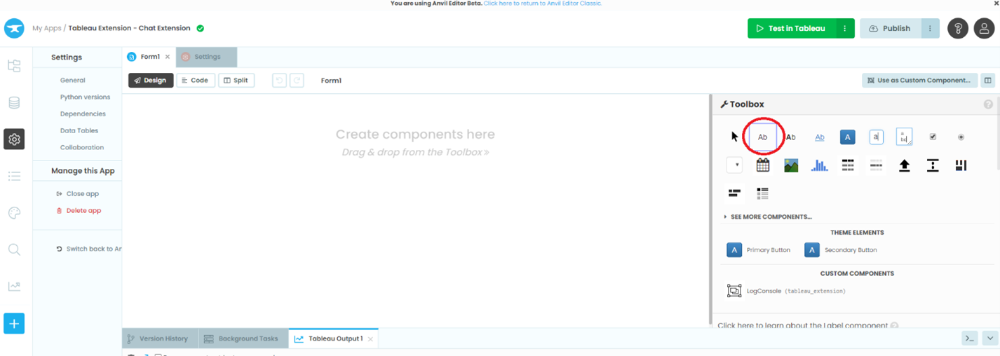
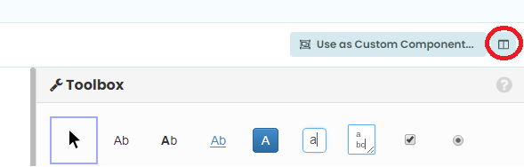
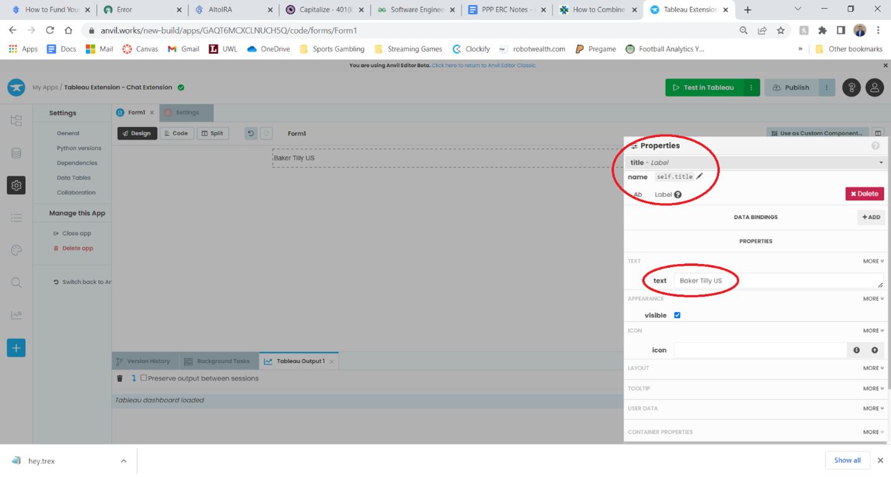

Chapter 1: Build your user interface
Creating a chat extension form using Anvil’s drag-and-drop editor.
Let’s start by building an application form using Anvil’s drag-and-drop editor.
Step 1: Create your Anvil app
Creating web apps with Anvil is simple. No need to wrestle with HTML, CSS, JavaScript or PHP. We can do everything in Python.
Log in to Anvil and click ‘Create a new app - Blank App’. Choose the Tableau Extension theme.
First, name the app. Click on the name at the top-left of the screen and give it a name.
Step 2: Adding a title to your form
When we create an Anvil app, it is initialized with a Form named ‘Form1’. A Form is a special kind of component that can play the role of a ‘page’ in Anvil. Form1 will serve as the main screen to our web application.
A Form is special because you can drag-and-drop components onto it in the visual designer. More on Forms here.
We construct and improve the form by dragging-and-dropping components from the Toolbox.
Let’s start by adding in a Label. Open up the toolbox, hover over the Label (circled below) and simply drag and drop it onto your Form.
When you create a Label (or any component in Anvil) it will be initialized with a name such as label_1. This is the Python name that you will use in code to edit and interact with this component. Typically we want to change these default labels to a more descriptive name to help keep track of and identify components.
Click on this button to close the toolbox:
And now open the properties panel on the right. Click on the name self.label_1 and replace label_1 with a more descriptive the name such as title.
The label also is initialized as blank. Add your company name to the text box.
Nice, now we have an Anvil Form that our Tableau Dashboard will be able to interact with.
In chapter 2 we will build our Tableau Dashboard that interacts with the Anvil web application.